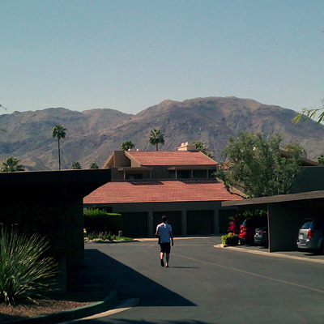
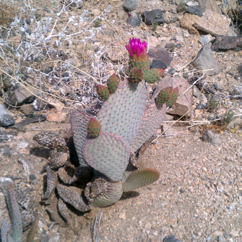
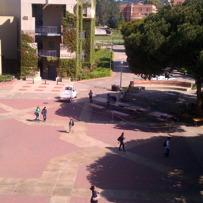
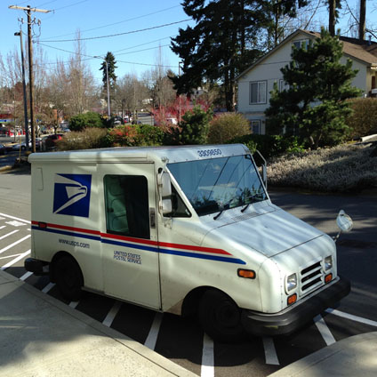
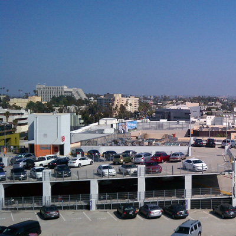

March 29, 2013
Tilt Shift with CSS
I love tilt shift photography. I decided I want to make a few faux shots of my own (with photos I took over the past year), but with only CSS.
This effect is only supported in Chrome and Safari :(
Hover over each photo to reveal the original.

Palm Desert

Cactus at Joshua Tree National Park
Moore Bulding at UCLA

Bruin Plaza at UCLA

UPS Truck in Bellevue, WA

Parking Lot at Santa Monica
It's definitely crazy how far CSS has come to be able to do this in just a few lines of code!